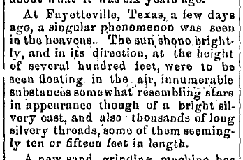

Huntingdon Globe de Pennsylvanie (journal de la guerre civile en Pennsylvanie), 2 décembre 1868 Guenther, Daniel: "1868: Fall of 'angel hair'", Magonia Exchange, 9 mai 2007
| Home |
|---|
|  |
(...)
At Fayetteville, Texas, a few days ago, a singular phenomenon was seen in the heavens. The sun shone brightly, and in its direction, at the height of several hundred feet, were to be seen floating in the air innumberable substances somewhat resembling stars in appearance though of a bright silvery cast, and also thousands of long silvery threads, some of them seemingly ten ou fifteen feet in length.
(...)
| Home |
|---|